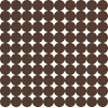
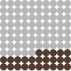
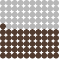
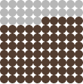
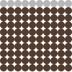
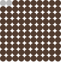

Is There Anything Else That Could Make Growing Cannabis More Sustainable?
There are sustainability upgrades like composting waste, switching to LED lights, or growing lower-energy strains, but none have the impact of one simple change: Growing cannabis outdoors.
Emissions of today's cannabis industry:
100% outdoor cultivation --> 75% decrease
100% solar + electrification --> 49% decrease
Shifting indoor to greenhouse -->25% decrease
Electrification with LEDs + heat pumps --> 10% decrease
Composting plant waste --> 2% decrease






*These are not additive. Solar considered as an impractical thought exercise.
Indoor grows can’t decrease their emissions to the level of outdoor cultivation. No need to burn
fossil fuels when you have the sun  .
.